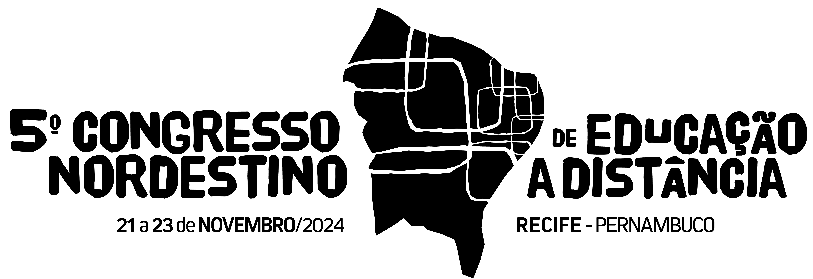

Realização:
Organização:
 



5º Congresso Nordestino de Educação a Distância
Desafios para a EAD pública de qualidade socialmente referenciada
A 5ª edição do Congresso Nordestino de Educação a Distância será realizada pelo Instituto Federal de Pernambuco - IFPE, na cidade de Recife, entre os dias 21 e 23 de novembro de 2024.
Objetivo: abordar, discutir, avaliar, trocar experiências sobre as ferramentas tecnológicas educacionais e a integração das vivências no mundo da EaD, experimentada pelos institutos federais da região Nordeste, as quais enriquecem a rotina dos que atuam nessa modalidade.
O evento tem como público-alvo: docentes, estudantes, gestores e pesquisadores da modalidade educação a distância.
ORGANIZAÇÃO
O 5º Congresso Nordestino de Educação a Distância é uma realização do Instituto Federal de Pernambuco e é organizado por: Instituto Federal de Alagoas • Instituto Federal da Bahia • Instituto Federal Baiano • Instituto Federal do Ceará • Instituto Federal do Maranhão • Instituto Federal da Paraíba • Instituto Federal do Piauí • Instituto Federal do Rio Grande do Norte • Instituto Federal do Sertão Pernambucano • Instituto Federal de Sergipe
Como chegar ao local do evento
Instituto Federal de Educação, Ciência e Tecnologia de Pernambuco - Campus Recife | Av. Prof. Luiz Freire, 500 - Cidade Universitária, Recife - PE, 50740-545
Edições do Congresso
1ª Edição
O 1º Congresso Nordestino de EaD teve como objetivo atender ao novo contexto educacional e socioeconômico deflagrado pela pandemia da Covid-19 a partir da temática central: Educação Híbrida e Tecnologias Educacionais. O congresso foi organizado pelos Institutos Federais da região nordeste do Brasil e realizado pelo Instituto Federal do Sertão Pernambucano de 14 a 16 de dezembro de 2020.
2ª Edição
Em sua 2ª edição, o Congresso Nordestino de Educação a Distância teve por objetivo discutir os novos caminhos que a Educação a Distância vem delineando no século XXI por meio da temática “EaD e Ensino Híbrido: Abordagens Multidimensionais”, no intuito de promover reflexões sobre a aplicação das Metodologias Ativas e das experiências com a Educação Inclusiva, além de debater sobre a Customização do Processo Ensino Aprendizagem e sobre o uso de Ambientes Virtuais de Aprendizagem dentro da modalidade EaD. O congresso foi organizado pelos Institutos Federais da região nordeste do Brasil e realizado pelo Instituto Federal de Alagoas de 24 a 26 de novembro de 2021.
3ª Edição
A 3ª edição do Congresso Nordestino de Educação a Distância, com o tema “A institucionalização da EAD e suas contribuições para o ensino presencial” foi realizado pelo Instituto Federal da Bahia de 22 a 24 de março de 2023. O evento teve como objetivo, promover a discussão sobre as experiências e estudos voltados ao processo de institucionalização da EAD, abordar as necessidades de criação de regulamentações internas e revisão de processos, fluxos e demandas. Discutir as políticas de capacitação, orçamento, estrutura física e recursos humanos; a mediação, estratégias, projetos e atividades diversas em educação a distância, ensino remoto e ensino híbrido; tecnologias assistivas e humanas; Impactos da legislação e reflexões sobre o Plano Nacional de Assistência Estudantil (PNAES) para a modalidade de educação a distância.
4ª Edição
A 4ª edição do Congresso Nordestino de Educação a Distância, com o tema "Inclusão e qualidade na Educação a Distância" foi realizado pelo Instituto Federal da Paraíba de 22 a 24 de novembro de 2023. Teve como eventos integrados o V Encontro de Educação a Distância do IFPB, a II Parahyba Innovation Summit e o 5º Simpósio de Pesquisa, Inovação e Pós-Graduação do IFPB. Mais detalhes em https://eventos.ead.ifpb.edu.br/4congressonordestino/
5ª Edição
De 21 a 23 de novembro de 2024, a capital pernambucana será palco do 5º Congresso Nordestino de Educação a Distância (EAD). O evento, que ocorrerá nas instalações do Instituto Federal de Pernambuco (IFPE),
promete reunir alguns dos principais nomes da educação a distância no Brasil.
Com o tema "Desafios para EAD pública de qualidade socialmente referenciada", o congresso pretende ser um espaço de reflexão e troca de experiências entre profissionais, pesquisadores, educadores e
estudantes de toda a região Nordeste e de outras partes do país. O objetivo é debater as melhores práticas e políticas para uma EAD que atenda às necessidades específicas da sociedade, promovendo inclusão
e excelência acadêmica.
Submissão de trabalhos (Prorrogado até 01/09/2024)
As inscrições como Autor, para apresentação de trabalho, serão realizadas por meio do sistema de eventos, no período a ser divulgado, com o envio do trabalho acadêmico — conforme modelos disponibilizados na página da Chamada para submissões — atendendo às seguintes modalidades:
Cronograma
14/10 - Resultado dos Trabalhos Aprovados.
14 a 28/10 - Período para os autores realizarem as devidas correções.
28/10 - Último dia para entrega dos trabalhos corrigidos.
01 a 06/11 - Envio dos vídeos dos trabalhos aprovados (artigo completo e resumo expandido).
13/11 - Publicação dos locais/horários de apresentação dos trabalhos.
21 e 22/11 - Apresentação dos trabalhos.
Artigo completo (Apresentação On-line)
Resumo expandido (Apresentação On-line)
Relato de experiência (Apresentação Presencial)
Eixos Temáticos
EDUCAÇÃO A DISTÂNCIA: QUALIDADE NA FORMAÇÃO DE PROFESSORES
Experiências e estudos voltados ao ensino, às práticas realizadas nos processos de aprendizagem e aos métodos de avaliação em cursos de formação inicial e continuada de professores, assentados em uma base sólida de conhecimentos e pressupostos de uma educação básica socialmente referenciada, na perspectiva de uma educação que promova o desenvolvimento integral dos sujeitos, e garanta a qualidade do ensino e aprendizagem nos cursos da Educação a Distância.
GESTÃO E ORGANIZAÇÃO DA EDUCAÇÃO A DISTÂNCIA
Experiências e estudos voltados à gestão e à organização da Educação a Distância: estruturas organizacionais em rede para a oferta de cursos na modalidade a distância, gerenciamento de projetos de educação a distância, institucionalização da Educação a Distância, Programa Nacional de Assistência Estudantil para EaD, Curricularização da extensão e a articulação orgânica entre as instituições de fomento e oferta da EAD, tendo em vista o acesso igualitário à educação socialmente referenciada, permanência e resultados com qualidade.
TECNOLOGIAS DA INFORMAÇÃO E COMUNICAÇÃO: Inovação, Acessibilidade e Inclusão
Experiências e estudos voltados ao desenvolvimento e uso de Tecnologias de Informação e Comunicação aplicadas à Educação a Distância, como meio de acesso ao conhecimento e desenvolvimento sustentável das sociedades e em práticas pedagógicas de modo criativo e contextualizado, na perspectiva da inclusão social com equidade.
Programação
atividades presenciais
IMPORTANTE: algumas atividades presenciais da programação abaixo ocorrem simultaneamente. Programe-se para comparecer ao ambiente da atividade escolhida com antecedência, e observe a capacidade máxima de ocupação em cada atividade.
21 DE NOVEMBRO
21/11 • 09h00
CERIMÔNIA DE ABERTURA • PRESENCIAL
AUDITÓRIO • CAMPUS RECIFE
Programação
atividades on-line
EM BREVE
Inscrições gratuitas
Há duas modalidades de participação e de inscrição/ingresso no Congresso: presencial ou on-line. Observe a programação (presencial / on-line), escolha a modalidade de inscrição e acesse o sistema de inscrições em umas das opções abaixo:
Inscrições/ingressos para participação on-line
+ OFICINAS ON-LINE
IMPORTANTE: a inscrição/ingresso para participar do Congresso na modalidade on-line é obrigatória para participar de oficinas on-line. Observe que algumas atividades on-line ocorrem simultaneamente - confira a programação do evento. Inscreva-se separadamente nas oficinas on-line escolhidas.
Inscrições/ingressos para participação presencial
+ OFICINAS PRESENCIAIS
IMPORTANTE: a inscrição/ingresso para participar do Congresso na modalidade presencial é obrigatória para participar de oficinas presenciais. Observe que algumas atividades presenciais ocorrem simultaneamente - confira a programação do evento. Inscreva-se separadamente nas oficinas presenciais escolhidas.
HOTÉIS
Informações em Breve
RESTAURANTES
Informações em Breve